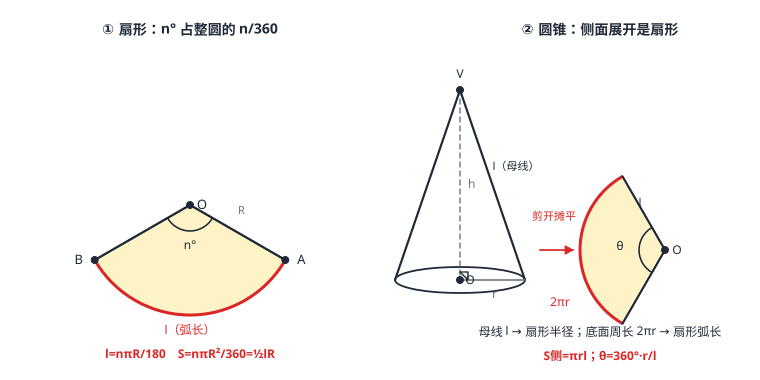

弧长、扇形面积与圆锥
圆是一张 360 等分的披萨：圆心角 n^\circ 拿走 \tfracn360 份——弧长 l=\tfracnπ R180，扇形面积 S=\tfracnπ R^2360=\tfrac12 lR。圆锥是卷起来的扇形：母线 l 当扇形半径、底面周长 2π r 当扇形弧长，侧面积 S_侧=π r l；母线、底面半径、高满足 l^2=r^2+h^2。公式全靠比例推导，不靠死记。
| 所属主题 | 圆 |
|---|---|
| 所属模块 | 几何 |
| 课标学段 | 第四学段（7~9 年级） |
| 前置知识 | 圆心角、弧与圆周角定理、直角三角形与勾股定理 |
| 核心素养 | 运算能力几何直观推理能力 |
教材定位
人民教育出版社《人教版（2024版）义务教育教科书·数学》
九年级上册第29章 圆29.3 弧长和扇形面积
对应九上 29.3：弧长和扇形面积；圆锥的侧面展开图与侧面积由扇形面积公式推出。
说明
弧长：圆心角为 n^\circ 的弧，占整圆的 \tfracn360。整圆周长 2π R，故 l=\tfracn360× 2π R=\tfracnπ R180（分母是 180，因为 n/360 先约掉了 2）。
扇形：由弧和两条半径围成的「披萨块」。面积同比例：S=\tfracn360× π R^2=\tfracnπ R^2360。换个穿法：由 l=\tfracnπ R180 反代 n，得 S=\tfrac12 lR——「弧当底、半径当高」的三角形版公式，已知弧长时最顺手。
圆锥的三要素与侧面积：底面半径 r、高 h、母线 l（顶点到底面圆周上一点的线段），满足 l^2=r^2+h^2（轴截面是等腰三角形，半截面即勾股）。沿一条母线剪开摊平：侧面展开图是扇形——扇形半径 = 母线 l，扇形弧长 = 底面周长 2π r，于是侧面积 S_侧=\tfrac12× 2π r× l=π r l，全面积再加底面 π r^2。
使用场景
弯管与弧形轨道下料：暖气管转弯中心线、弧形窗帘轨道、跑道弯道——圆弧实长是下料长度，量出圆心角与半径就能算，不用软尺贴着量。
锥形帽与尖顶包装：圣诞帽、冰淇淋蛋筒、漏斗都是圆锥——纸样下料要的就是「侧面展开扇形」：半径取母线、弧长取头围。
注意点
弧长与扇形面积的分母差一倍（180 vs 360）：别背混。两者都来自 \tfracn360 份比例，弧长时乘 2π R、面积时乘 π R^2，写比例式就不会错。
圆锥展开扇形的「半径」是母线 l，不是底面半径 r；扇形的「弧长」是底面周长 2π r，不是母线。角色错位是本篇第一大坑。
S_侧=π r l 里 r 是底面半径、l 是母线——两个字母含义别互换；全面积记得加底面 π r^2。
「弧的度数」是圆心角的度数，与弧长是两码事：60^\circ 的弧在不同半径的圆里长度不同（度数定比例、半径定规模）。
证明

图 1：左——扇形：圆心角 n°、半径 R、弧长 l=nπR/180；右——圆锥与它的侧面展开图：母线 l 变扇形半径，底面周长 2πr 变扇形弧长，展开圆心角 θ=360r/l
证明
结论 1弧长公式：n^\circ 的弧长 l=\tfracnπ R180，等价地 \tfracl2π R=\tfracn360。
把整圆按 1^\circ 圆心角切成 360 等份（圆心角相等的弧相等，圆心角、弧与圆周角定理），每份弧长 \tfrac2π R360=\tfracπ R180。n^\circ 的弧含 n 份：l=\tfracnπ R180。本质是比例：\tfracl2π R=\tfracn360（图 1 左）。
关键一步依据是圆心角相等的弧相等（圆心角、弧与圆周角定理）：把整圆按 1^\circ 圆心角切成 360 等份，每份弧长就是 \tfrac2π R360=\tfracπ R180；n^\circ 的弧正好含 n 份，所以 l=\tfracnπ R180。写成 \tfracl2π R=\tfracn360 就看出弧长与圆心角成正比。
结论 2扇形面积公式 S=\tfracnπ R^2360，且 S=\tfrac12 lR。
同理 \tfracSπ R^2=\tfracn360，得 S=\tfracnπ R^2360。由 l=\tfracnπ R180 得 \tfracnπ R^2360=\tfrac12× \tfracnπ R180× R=\tfrac12 lR——与三角形面积「\tfrac12 底高」同构：把弧拉直当底、半径当高。
关键一步依据与弧长同理：扇形与整个圆是同心的、圆心角成比例的两块图形，面积之比等于圆心角之比 \tfracn360，得 S=\tfracnπ R^2360；再用 l=\tfracnπ R180 把 n 消掉，得 \tfracnπ R^2360=\tfrac12× \tfracnπ R180× R=\tfrac12 lR。这与三角形面积「\tfrac12 底高」是同一个模式：把弧拉直当底、半径当高。
结论 3圆锥侧面展开成扇形，扇形半径等于母线、弧长等于底面周长 2π r，故侧面积 S_侧=π rl，展开图的圆心角 \theta=\tfrac360rl。
沿母线剪开侧壁摊平，曲面无拉伸无折叠，面积不变。摊平后：顶点为圆心，原来从顶点出发的每条母线长都是 l，摊平后自然成为半径 l 的扇形半径；底面圆周被摊开成扇形的弧，长度不变为 2π r（图 1 右）。由弧长公式反解圆心角：2π r=\tfrac\thetaπ l180，\theta=\tfrac360 rl；面积用 \tfrac12 lR 版：S_侧=\tfrac12× 2π r× l=π r l。
关键一步依据是曲面剪开摊平不改变面积：沿母线剪开后，原来的每条母线变成从顶点出发的半径（长仍是 l），底面圆周变成扇形的弧（长仍是 2π r），所以展开图是一个半径 l、弧长 2π r 的扇形。用弧长公式反解圆心角得 \theta=\tfrac360 rl；用 S=\tfrac12 lR 版（弧长取 2π r、半径取 l）即得 S_侧=\tfrac12× 2π r× l=π r l。
动手实验
用纸卷一个圆锥侧筒，沿一条母线剪开摊平——得到一个扇形；量扇形半径（=母线）与弧长，对比底面圆周长：弧长与周长相等（误差来自纸张厚度）。再取一段细棉线沿弧摆放拉直量长，与 \tfracnπ R180 的计算值对比，通常能吻合到毫米级。
解题思路
弧长/扇形先写比例再代数：\tfrac弧长2π R=\tfracn360、\tfrac面积π R^2=\tfracn360——三个量知二求一，比例式自动防「分母记错」。
已知弧长求面积，直接 S=\tfrac12 lR；已知面积与半径反求 n，用 n=\tfrac360Sπ R^2——一套公式双向开火。
圆锥计算画两张图：右轴截面直角三角形（r、h、l 勾股知二求一），再画展开扇形（半径 l、弧 2π r、圆心角 \tfrac360 rl）——立体问题立刻平面化（例 3）。
下料问题先分清「要的是哪块」：纸样的展开扇形面积 = 侧面积；若要含底面（如封闭锥形包装），加 π r^2。
按场景的例题
例 1（场景：图形设计） 弧形灯带下料
圆形吊顶的弧形灯带所在弧的圆心角 120^\circ，半径 15 厘米（按图示比例）。灯带长度（弧长）是多少厘米？
解：l=\tfracnπ R180=\tfrac120π× 15180=10π\approx 31.4（厘米）。
答：l=10π\approx 31.4 厘米。
例 2（场景：数据调查） 扇形统计图绘制
调查报告中「步行上学」占 \tfrac512，画成半径 12 厘米的扇形统计图。该扇形的圆心角是多少度？面积是多少平方厘米（π\approx 3.14）？
解：圆心角 n=\tfrac512× 360^\circ=150^\circ。面积 S=\tfracnπ R^2360=\tfrac150π× 12^2360=60π\approx 188.4（平方厘米）。验算：\tfrac12 lR 版，l=\tfrac150π× 12180=10π，S=\tfrac12× 10π× 12=60π，一致。
答：圆心角 150^\circ，扇形面积 60π\approx 188.4 平方厘米。
例 3（场景：竞技与游戏） 游园会锥形帽纸样
做一顶底面半径 3 分米、母线 5 分米的锥形帽。求：帽的高；纸样（侧面展开扇形）的圆心角与侧面积。
解：高：h=\sqrtl^2-r^2=\sqrt25-9=4（分米）。展开圆心角：\theta=\tfrac360 rl=\tfrac360× 35=216^\circ。侧面积：S_侧=π r l=15π\approx 47.1（平方分米）。核验：展开弧长 \tfrac216π× 5180=6π，恰等于底面周长 2π× 3=6π。
答：高 4 分米；展开圆心角 216^\circ；侧面积 15π\approx 47.1 平方分米。
常用推论
展开圆心角 \theta=\tfrac360 rl 是「圆锥胖瘦计」：r 越接近 l（越扁胖），\theta 越接近 360^\circ（展开几乎整圆）；r\ll l（又高又瘦）时只展开成窄窄一瓣。
等底等高的圆锥侧面积由母线唯一决定：l 定了则 π r l 定——而 l^2=r^2+h^2 说明三者知二求一，圆锥计算永远是「一个直角三角形 + 一个扇形」。
扇形与三角形面积同构 S=\tfrac12 lR：把弧「拉直」的想象不但给出公式，还提示弧长的确相当于一段「弯着的底」——后续把弧微分成小段求和的思想在高中正式登场。
易错点
错弧长公式是 \tfracnπ R360。
为什么错把比例里的 2π R 写成 π R：\tfracn360× 2π R 先约 2 得 \tfracnπ R180，分母是 180。
正确l=\tfracnπ R180；扇形面积才是分母 360 的 \tfracnπ R^2360。
错圆锥侧面展开扇形的半径是底面半径 r。
为什么错展开时顶点为圆心、母线摊平为半径——底面圆周则变成了弧长。角色恰好互换。
正确展开扇形：半径 = 母线 l，弧长 = 底面周长 2π r，圆心角 \tfrac360 rl。
错帽子的纸样面积只要算 π r^2。
为什么错π r^2 是底面圆（帽子不做底）的面积；侧壁用的是 π r l。
正确侧面展开扇形面积 =π r l；只有封闭容器才加底面 π r^2。
直观理解
圆是一张切好等分线的披萨：圆心角说「拿几份」，周长和面积都按 \tfracn360 打折——弧长公式、扇形公式都是这一句话的代数写法。圆锥则是「卷披萨」：把一瓣扇形卷起来，弧边卷拢成底面圆、两条半径边缝成一条母线。所有圆锥公式都能靠「展开摊平」现场推出来：摊平之后，世界重新变成平面几何。